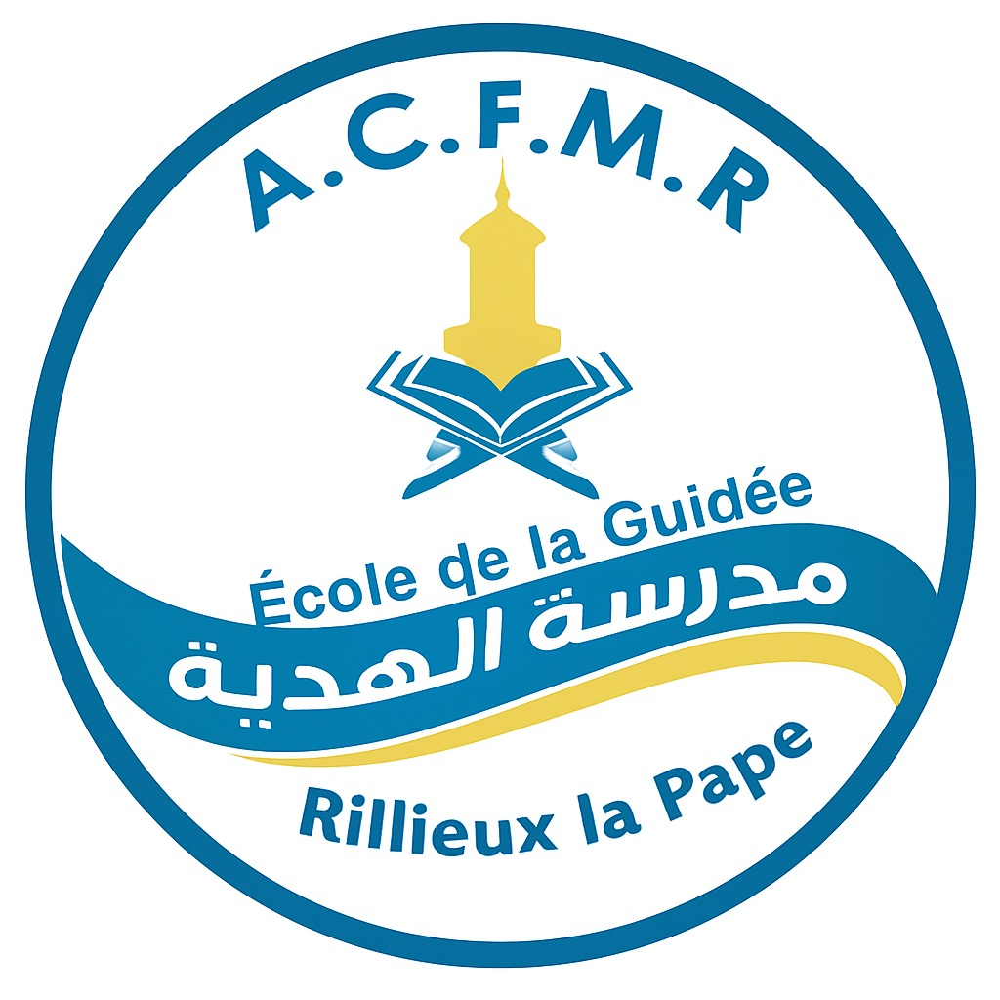
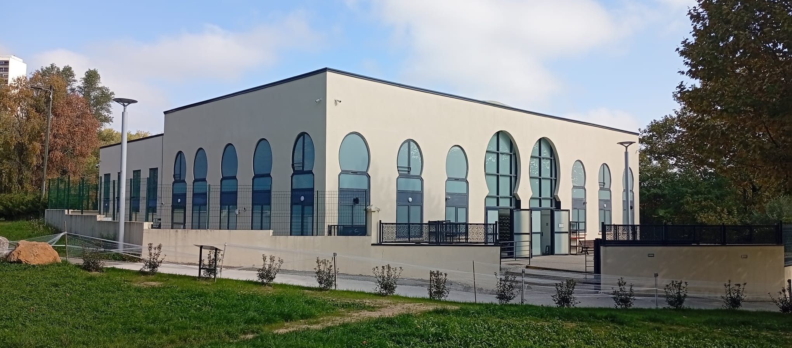

Univers culturel
Univers culturel
Univers culturel que je partage avec A.C.F.M.R, l'Association Culturelle Franco-Musulmane de Rillieux-la-Pape, qui dirige à la grande mosquée l'école AL-HIDAYA, traduction française : école de la Guidée.
← Retour à l'accueil

Présentation
École AL-HIDAYA
Depuis plus de vingt ans, l'école AL-HIDAYA accueille des enfants âgés de six à quinze ans et leur propose un cursus de sept années, axé sur l'apprentissage de la langue arabe ainsi que sur la transmission des valeurs de la religion musulmane.
Ayant moi-même suivi une partie de ce parcours plus jeune, cette expérience m'a beaucoup apporté, tant sur le plan personnel que dans l'apprentissage et la pratique de ma religion.
Dans une volonté de m'impliquer et de rendre ce que j'ai reçu, j'ai accepté le poste de secrétaire de l'école AL-HIDAYA, proposé par le directeur, qui fut également mon enseignant.
Mes principales responsabilités et objectifs
Coordination
- Assurer la communication entre la direction, les parents et les professeurs
- Faciliter la circulation des informations importantes
- Maintenir un lien clair entre les différentes parties
Suivi des élèves
- Gérer les situations liées aux élèves : absences, maladies, retards, suivi courant
- Traiter les besoins du quotidien avec réactivité
- Garantir une continuité administrative simple et efficace
Appui à la direction
- Épauler la direction dans ses tâches quotidiennes
- Participer à l'organisation générale de l'école
- Contribuer à la modernisation des outils et méthodes
Vision
- Structurer un cadre de travail plus fluide
- Améliorer le suivi pédagogique et administratif
- Accompagner l'école dans son développement numérique
Compétences mobilisées
Organisation & administratif
Communication & relationnel
Gestion du quotidien
Professionnalisme
L'école AL-HIDAYA passe au numérique
À mon arrivée, j'ai rapidement constaté que l'ensemble des processus (inscriptions, registre d'appel, suivi des élèves, notation) étaient entièrement gérés sur papier. Afin de moderniser le fonctionnement de l'école, j'ai conçu et déployé, avec l'accord de la direction, une solution numérique basée sur un serveur Nextcloud hébergé sur mon infrastructure personnelle, inspirée du fonctionnement de Pronote.
Après plusieurs semaines de travail, la plateforme ecole.al-hidaya.fr a été déployée et est aujourd'hui utilisée par l'ensemble de l'administration et des enseignants, avec un accès prochain pour les élèves.
Ce que la plateforme permet
- Centraliser les supports pédagogiques : leçons d'éducation islamique et manuels de langue arabe
- Permettre aux enseignants de saisir directement les notes et appréciations pour les bulletins semestriels
- Dématérialiser le registre d'appel avec un suivi en temps réel des présences
Application complémentaire
Dans cette continuité, j'ai développé une application avec une interface simple et intuitive, permettant d'envoyer en un clic des messages préenregistrés (absences, retards, informations diverses) aux deux parents de l'élève, avec insertion automatique des informations le concernant.
Le projet n'en est qu'à ses débuts, et de nouvelles fonctionnalités seront prochainement mises en place.